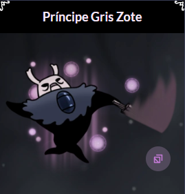
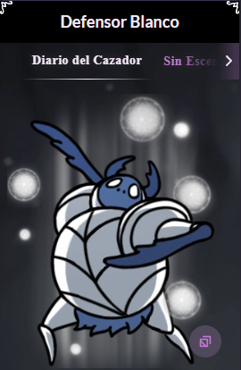
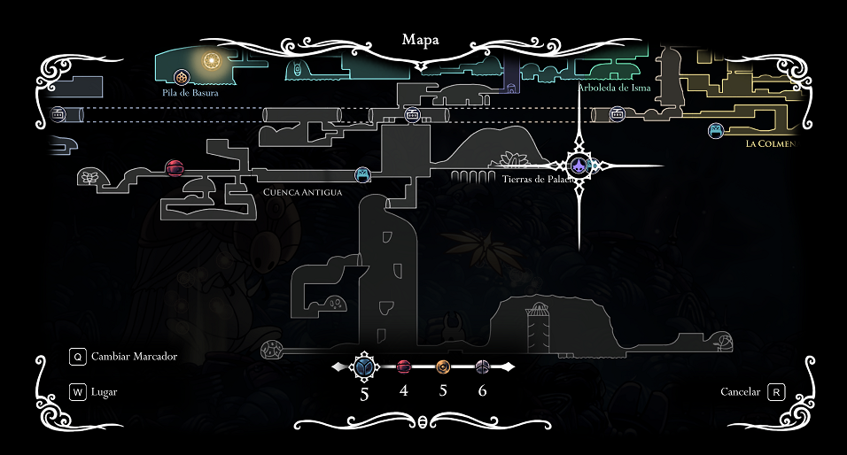

Sueños Ocultos
Sinopsis
Sueños Ocultos es el primero de los DLCs gratis para Hollow Knight, y como indica el nombre todo el
contenido añadido gira entorno a los sueños. Incluye nuevos jefes, habilidades como el portal Onírico
que nos permite teletransportarnos y una nueva estación de ciervos situada en Cuenca Antigua.

Príncipe Gris Zote
Para luchar contra este boss, el jugador debe haber salvado a Bretta y a Zote, además de haber derrotado
a este último en el Coliseo de los Insensatos, haber conseguido las Alas de monarca,
entrar en la casa de Bretta en Bocasucia, bajar a su sótano y usar el Aguijón Onírico en la estatua de
este personaje.
Se puede luchar contra él hasta un máximo de 10 veces, tras cada victoria obtendrá más HP, hará más daño:
-1 máscara durante las 3 primeras batallas.
-2 máscaras en la cuarta, y una máscara más por victoria en las batallas restantes.
Cada vez que peleemos nuevamente contra él se añadirán más adjetivos a su descripción de entrada. Esto ya
aparecerá por defecto en el Hogar de Dioses.
Defensor Blanco

El Defensor Blanco es una versión mejorada del Defensor del Estiércol, ese escarabajo pelotero que
podemos encontrar en los canales reales.
Al igual que pasa con el Zote «el todopoderoso», en esta ocasión lucharemos con una versión onírica
suya, pero al menos el sueño de este jefe es algo real, solo que fue en el pasado.
Resulta que antiguamente el Defensor del Estiércol protegía a la mismísima realeza y tenía el apodo de
«El Defensor Blanco». El caso es que podremos acceder a un sueño en el que recuerda aquellos tiempos y
por lo tanto podremos combatir con lo que el antiguamente fue, un gran defensor.
Este jefe también tiene esa mecánica en la que en cada combate que le derrotemos este mejorará, así
hasta 5 veces. Cada vez nos quitará más vida con sus ataques: La primera vez que combatamos nos quitará
una máscara, la segunda ronda nos quitará dos… y así hasta que le derrotemos 5 veces.
Portal Onírico
Esta nueva habilidad es básicamente un teletransporte, podremos marcar una zona del mapa y esa será
nuestra zona de teletransporte. Esto tendrá un leve coste: 1 de Esencia, pero ojo, que si nos confiamos
la Esencia irá bajando y esta es muy importante en Hollow Knight.
Para desbloquear esta habilidad, tendremos que conseguir 900 de Esencia e ir a ver a Seer, la vidente.
La mosca que está en Tierras de Reposo.
Estación de Ciervocaminos: Cuenca Antigua
Esta estación está muy posicionada, ya que es necesario bajar a Tierras de palacio paraa completar el
tercer final del juego. Aquí podemos ver la localización de la estación.

.webp)